현재 보유머니현황
현재 게임머니현황
포커를 시작할 때 가장 먼저 배워야 하는 것은 어떤 포커 핸드가 최고 인지입니다.
5장의 무늬가 같으며 A, K, Q, J, 10 으로 이루어진 족보를 말합니다. 포커에서 가장 높은 족보입니다.
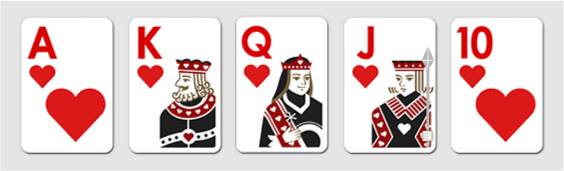5장의 무늬가 같으며 연속된 숫자 5장으로 이루어진 족보를 말합니다.
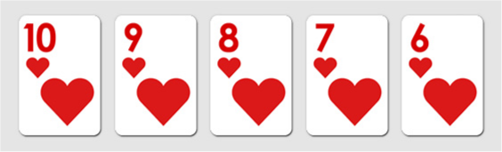AAAA, 3333 등 동일한 숫자 4장으로 이루어진 족보를 말합니다. 나머지 1장의 키커로 승자를 정합니다.
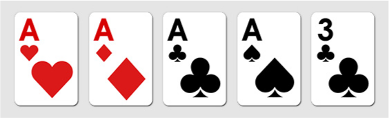3장의 동일한 숫자(트리플)와 2장의 동일한 숫자 (원 페어)로 이루어진 족보를 말합니다.
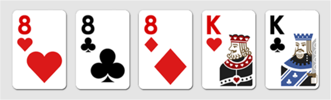5장의 무늬가 같은 카드로 이루어진 족보를 말합니다.
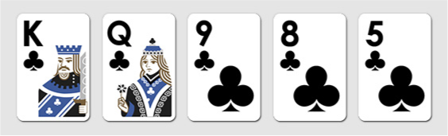무늬에 상관 없이 연속된 숫자 5장으로 이루어진 족보를 말합니다. 5장의 카드는 같은 무늬가 아닙니다.
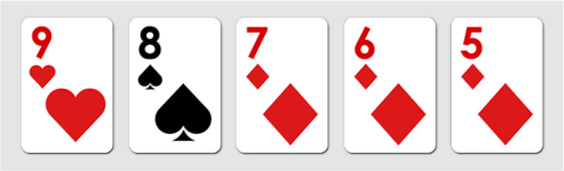동일한 숫자 3장으로 이루어진 족보를 말합니다.
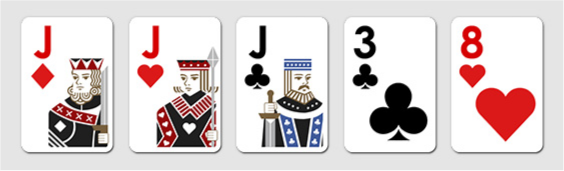동일한 숫자 2장이 2쌍으로 이루어진 족보를 말합니다.
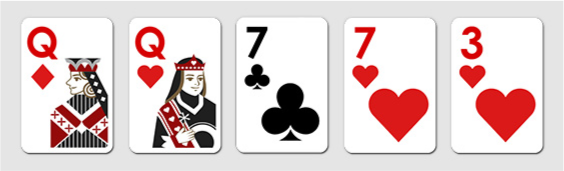동일한 숫자 2장이 1쌍으로 이루어진 족보를 말합니다.
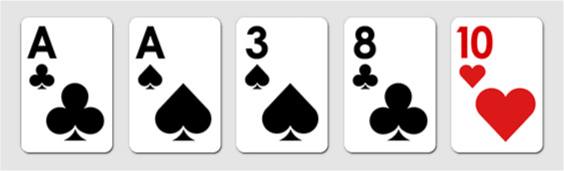위의 9개의 족보에 해당되지 않는 경우를 말합니다. 제일 높은 숫자 순서로 승자를 정합니다.
텍사스 홀덤에서는 무늬에 대한 서열을 따지지 않습니다.
로얄 플러시가 최고의 족보이며 A, K, Q, J, 10으로 이루어져있으며 5장의 카드가 동일한 무늬인 경우를 말합니다.
족보는 포커 게임 규칙에 따라 5장의 카드 세트를 말합니다. 각 족보에는 어느 쪽이 이길 지 결정하는 순위가 있습니다.
플러시는 동일한 문양의 카드 5장로 이루어진 족보를 말합니다. 풀 하우스보다 낮고, 스트레이트보다 높습니다.
카드는 A, K, Q, J, 10, 9, 8, 7, 6, 5, 4, 3, 2 로 높은 순서에서 낮은 순서로 순위가 매겨집니다.
텍사스 홀덤에서 가장 좋은 시작 핸드는 AA이지만, 가장 낮은 핸드는 서로 다른 무늬의 7과 2입니다. 무늬가 다른 7과 2를 보유하는 것은 일반적으로 최악의 핸드로 생각합니다..
홀덤의 가장 중요하고 기본적인 요소는 핸드를 고르는 것입니다. 나쁜 핸드들로 참여를 하게 된다면 장기적으로는 큰 손해를 볼 수 있습니다.
포커는 52 장의 카드로 플레이하는 게임으로서, 플레이어는 서로 베팅하고 자신의 핸드, 전략 및 운에 의존하여 플레이합니다. 텍사스 홀덤은, 2장의 핸드 카드와 5장의 커뮤니티 카드를 조합하는 게임입니다.
포커의 기본 규칙은 다음과 같습니다.
포커에서는 족보에 따라 승자를 결정하므로 족보를 숙지하는 것이 좋습니다. 그리고 좋은 족보를 만들기 위해서는 발전 가능성이 높은 핸드들로 플레이하는 것이 좋습니다.
포지션은 베팅 및 액션의 순서를 결정합니다. 그리고 홀덤에서는 포지션이 중요합니다. 상대 플레이어보다 뒤에서 액션을 취한다면 더 좋은 포지션을 갖고 있다고 표현합니다.
그에 따라 각 포지션은 핸드 레인지(범위) 를 다르게 가져갑니다. 포지션별 핸드 레인지에 대해서는 뒤의 포지션별 핸드레인지에서 집중적으로 다루도록 하겠습니다.
프리플랍에서는 빅 블라인드의 왼쪽에 앉은 언더 더 건 (UTG) 플레이어부터 액션을 시작하고, 시계 방향으로 계속해서 빅 블라인드가 마지막으로 행동합니다.
플레이어는 다음 세 가지 액션 중 하나를 결정해야 합니다.
플랍은 5장의 커뮤니티 카드 중 처음 3장을 공개하는 것을 의미합니다.
플랍 이후 포스트 플랍으로 진행되며, 플레이어는 3장의 커뮤니티 카드가 자신의 핸드 카드와 어떤 조합이 되었는지에 따라 체크, 베팅, 콜, 폴드 또는 레이즈를 할 수 있습니다.
플랍 이후 스몰 블라인드부터 베팅을 시작하고, 딜러가 마지막으로 액션을 취합니다.
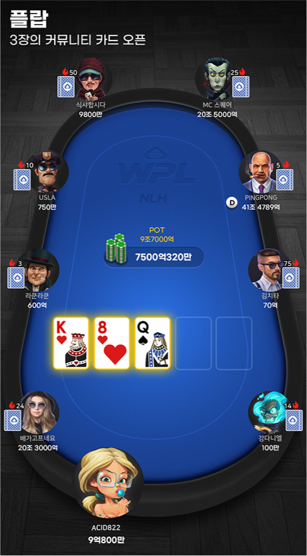4번째 커뮤니티 카드(턴)는 플랍 후에 오픈되며, 3번째의 베팅이 시작됩니다.
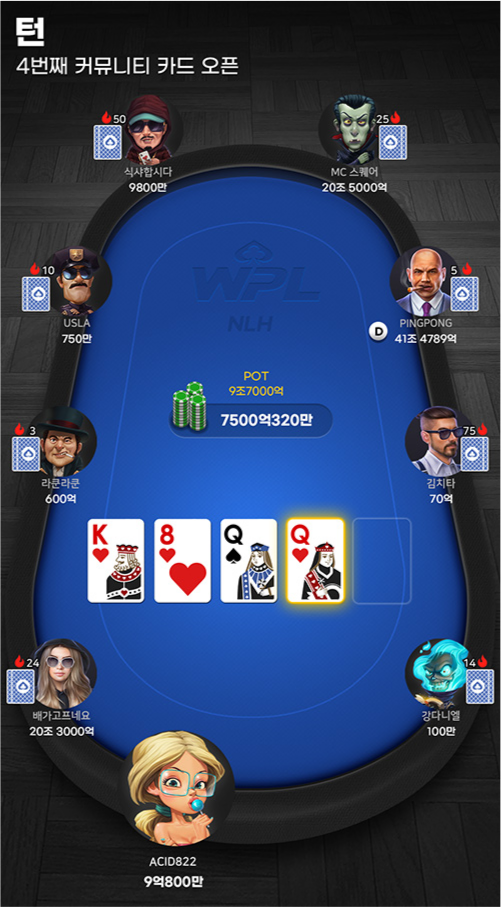5번째 커뮤니티 카드(리버)가 오픈되고, 플레이어는 자신의 족보가 어떻게 완성되었는지 알게됩니다.
리버의 액션이 종료 된 후 2명 이상의 플레이어가 있을 경우, 쇼다운을 진행합니다.
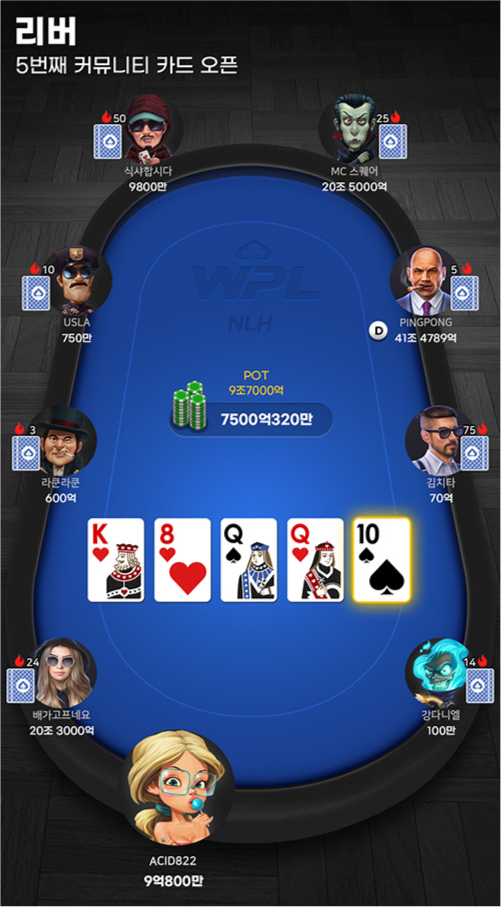쇼다운은 게임에 최소 2명의 플레이어가 남아있을 때 발생하며, 핸드와 커뮤니티 카드 5장을 조합하여 가장 높은 족보를 가진 플레이어가 팟을 차지합니다.
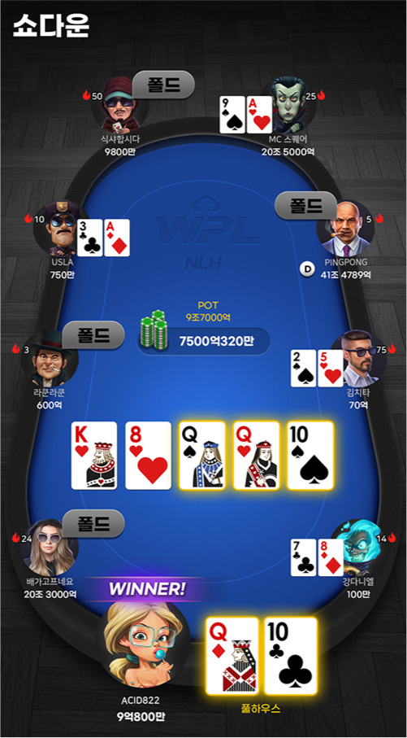포커를 시작하기 전에 기본적인 포커 전략을 배워야 합니다. 첫째, 핸드 랭킹을 기억해야 합니다. 대부분의 초보자들이 많이 하는 실수는 자신이 좋은 핸드를 가지고 있다고 생각할 때 발생하기 때문입니다. 자세한 내용은 족보 및 핸드 랭킹에서 다루도록 하겠습니다.
둘째, 홀덤 용어를 배워야합니다. 용어를 알고 있어야 게임에서 일어나는 일을 정확히 알 수 있습니다. 올바른 용어를 모른다면, 실수로 인해 원치 않은 액션을 하게될 수 있습니다. 자세한 내용은 홀덤 용어에서 다루도록 하겠습니다.
세븐 포커가 아닌 홀덤의 게임 방식에 익숙해지는 것도 중요합니다. 일반적으로 홀덤은 프리플랍에선 스몰 블라인드부터 시작하여 모든 플레이어에게 두 장의 카드를 지급합니다. 프리플랍에서는 빅 블라인드가 가장 마지막에 액션을 취할 수 있고, 포스트 플랍에서는 스몰 블라인드부터 액션을 취할 수 있습니다.
홀덤은 처음에 이해하기 어려울 수 있지만 기본적인 팁들을 배워 둔다면, 자신만의 전략을 세우고 발전 시킬 수 있습니다. 초보자들을 위한 포커 팁은 다음과 같습니다.
초보자가 저지르는 일반적인 실수는 상대방이 갖고 있을 수있는 핸드 카드를 고려하지 않고 모든 핸드를 플레이하는 것입니다. 좋지 않은 핸드를 폴드하지 않고 많이 플레이할수록 패배 확률이 높아집니다. 플레이 핸드와 폴드 핸드를 설정하는 것이 승리의 열쇠입니다.
자신의 핸드와 보드를 보았을 때, 내가 팟을 가져오기 위해 얼마나 좋은 카드인지 확인하세요. 플러시를 만들 확률이 높아졌다거나, 트리플이 되었다거나, 혹은 아무것도 해당되지 않을 수도 있습니다.
쉽게 저지르는 실수 중 하나는 블러프를 하면 상대를 폴드 시킬 수 있을 거라는 생각입니다. 하지만 언제나 블러프가 쉽게 먹히진 않을 것입니다.
포지션은 홀덤에서는 정말 중요한 요소입니다. 초보자에게 가장 좋은 포지션은 마지막으로 액션을 취할 수 있는 딜러 포지션입니다.
즉, 앞 플레이어들의 액션을 보고 상대를 분석할 시간이 더 많이 갖게 되는 자리입니다.
처음 홀덤을 치게 된다면, 대부분은 아니더라도 일정 시간을 소모하게 될 것입니다. 확률이 항상 자신에게 유리하지는 않겠지만, 확률이 높은 게임을 꾸준히 플레이한다면 장기적으로는 승리하게 될 것입니다
중급자로서 플레이하는 데 필요한 팁은 다음과 같습니다.
자신만의 전략을 한 단계 더 발전시키려면 다양한 핸드들의 확률을 잘 이해하고 있어야 합니다. 확률과 배당률의 상관관계를 배운 후에는 승리 가능성이 높아집니다.
초보자일 경우, 블러프를 너무 많이 하는 것은 좋지 않습니다. 하지만 더 나은 포커 플레이어가되기 위해서는 블러프를 배우는 것이 필수입니다. 블러프는 상대 플레이어보다 더 좋은 핸드를 가지고 있다고 생각하도록 허세를 부리는 것을 의미합니다. 그러나 팟에 참여한 플레이어가 많지 않은 경우에만 블러프를 하는 것이 좋습니다.
점점 자신감이 커질수록 레이즈를 더 자주 고려할 수 있습니다. 자신이 테이블에서 최고의 핸드를 가지고 있다고 생각하거나, 다른 플레이어를 폴드시키고 싶을 때 레이즈하는 것이 좋습니다.
홀덤에 대한 경험이 많아지면 배당률이 좋은 팟의 경우, 페어와 같은 핸드도 플레이 하는 것이 좋을 수 있습니다. 그리고 상대방을 혼란스럽게하기 위해 여러 핸드를 플레이하는 것도 좋습니다.
중급 단계의 핵심은 다른 플레이어의 베팅 패턴을 분석할 수 있다는 것입니다. 베팅 패턴을 통해 어떤 플레이어가 초보자 같은 지 확인할 수 있습니다. 상대방을 분석하고 최적의 결정을 내리세요.
고급 플레이어를위한 포커 팁은 다음과 같습니다.
수학적 이론은 홀덤 실력을 향상시키는 데 중요합니다. 초보자는 계산기나 레인지 차트에 의존했을 수도 있지만, 어떤 핸드가 다른 핸드보다 더 유리한지, 승리 확률을 계속 생각하세요.
테이블의 분위기를 잘 읽는 방법과 상대 중인 플레이어 들의 성향을 파악한 후에는 고급 블러프를 할 수 있을 것입니다. 핸드에 충분한 기대값이 있다면 항상 블러프를 추구해야 합니다.
잘하는 플레이어는 대체적으로 자신만의 전략을 다듬고 발전시키고 배우는 것을 멈추지 않습니다. 한 단계 발전하기 위한 가장 좋은 방법 중 하나는 프로 포커 플레이어를 보는 것입니다. WPL 팀프로들의 방송을 보며 어떻게 플레이하는지 확인하세요!